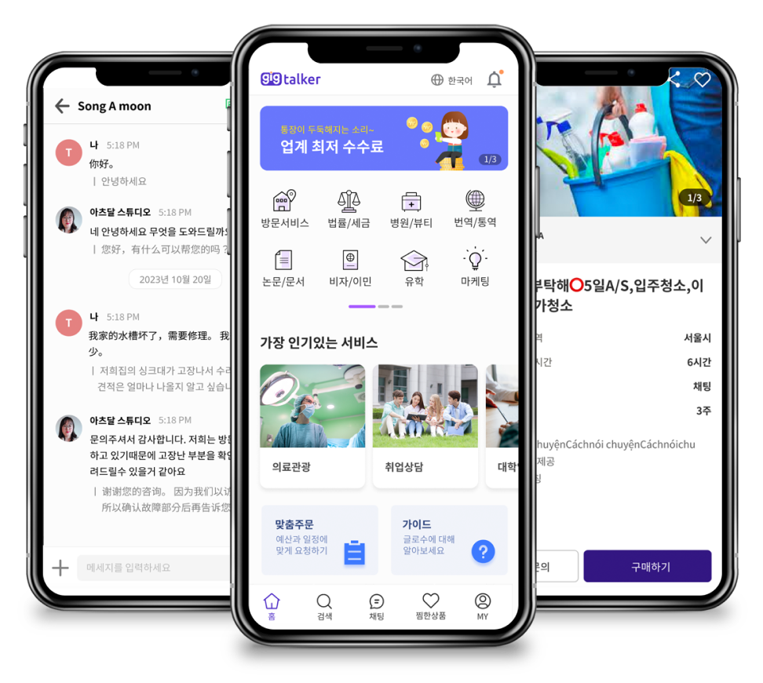
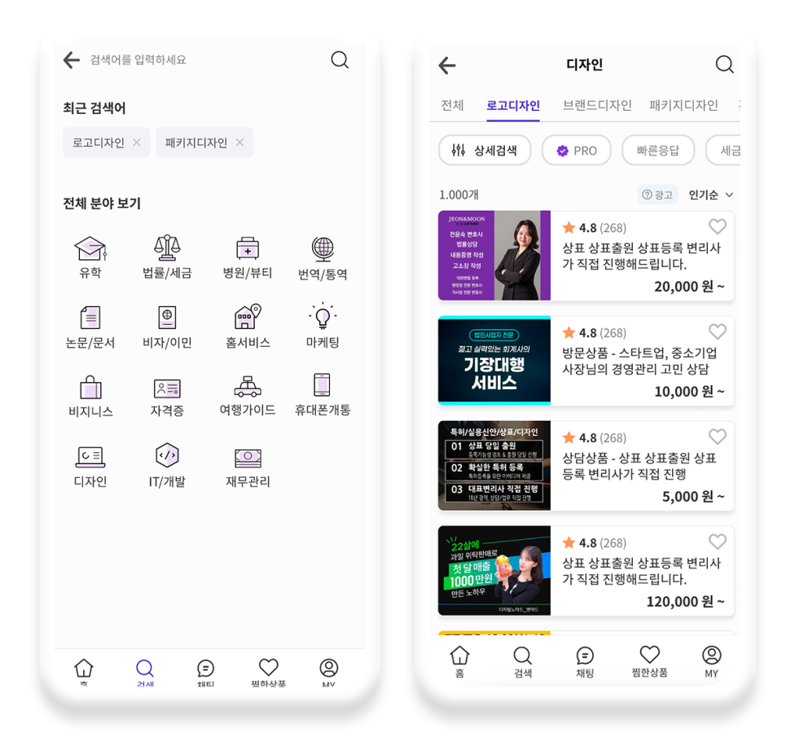
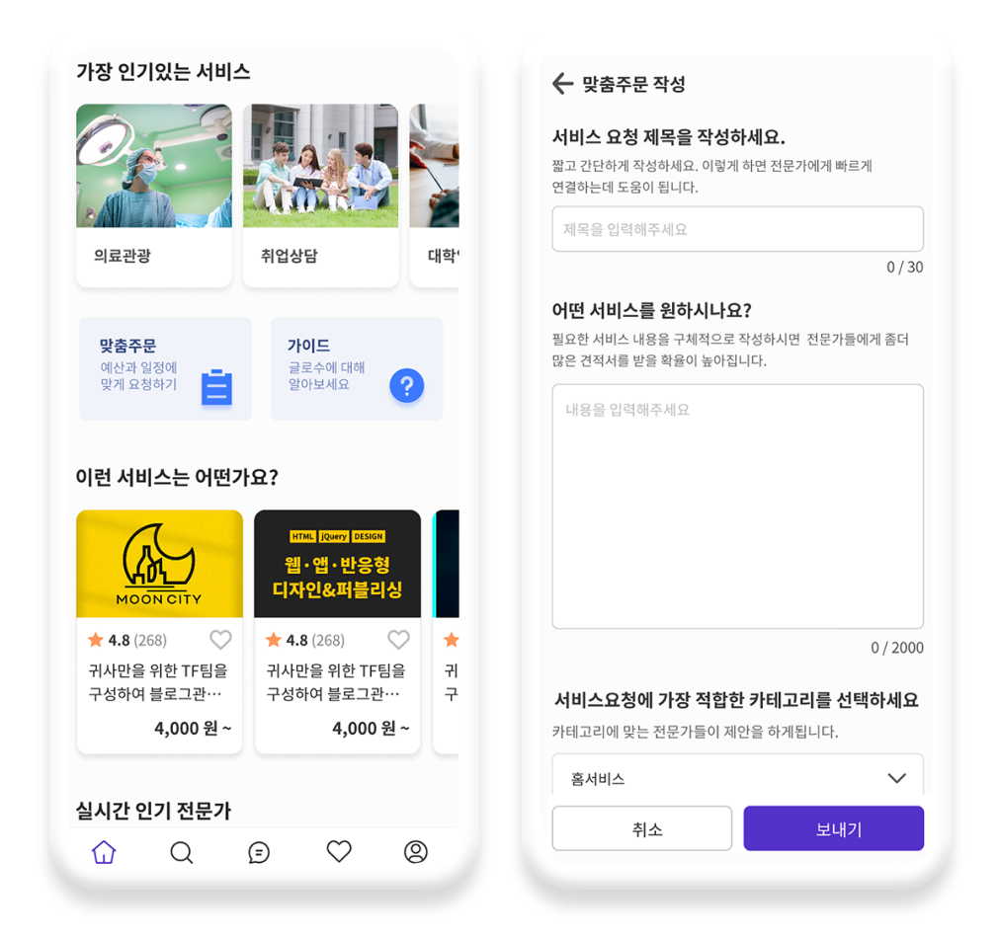
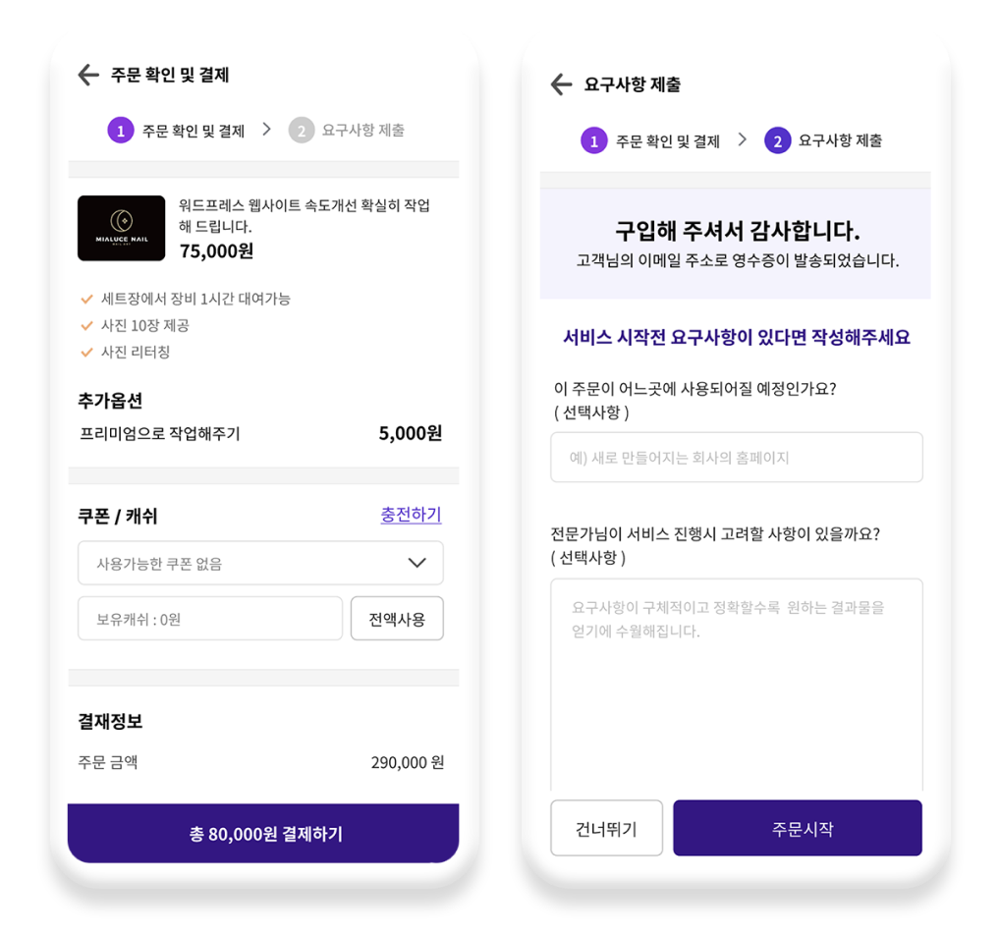

만나기 어려운 전문가를
쉽게 만날 수 있습니다.
긱톡커는 전문가를 찾아 원하는 서비스를 의뢰하고 결과물을
받거나 방문/상담을 할수있는 전문가 매칭 플랫폼입니다.
채팅이나 견적요청을 작성해 궁금한점을
문의해보세요


긱톡커란?
국내외 사용자와 전문가를 매칭해 전문가 서비스를 중개하는
플랫폼입니다. 디자인, 개발, 마케팅, 비자, 세금, 번역, 의료 등
여러 분야의 전문가를
만나
곤란한 문제를 해결해보세요.
긱톡커 전문가는 어떤 사람인가요?
각 분야의 전문 지식이 있는 분들이 전문가로 활동하고 있습니다.
긱톡커가 직접 컨택한 전문가부터 직접 긱톡커에 등록한 전문가들이
서비스를
진행합니다. 각 주제별 전문가들을 확인해보고 원하는
서비스를 구매해보세요.
긱톡커는 에스크로 결제 시스템으로 서비스가
완료되었을때 결제가 되어 여러분의 자금을 안전하게 지켜줍니다.
전문가 신청 안내 자세히 보기
긱톡커 이용방법

분야별 전문가 찾기
긱톡커 홈페이지 PC나 앱에서 카테고리별로 전문가를
검색하시거나, 이름 등 키워드로 전문가를 검색하고
서비스를 구매할 수 있습니다.
전문가에게 연락하는 방법
구매하기전이나 구매한후에도 전문가에게 채팅을 통해 상담이
가능합니다. 채팅이 부담된다면 간략한 요구사항을 적어
견적요청도 가능합니다.
긱톡커에서는 외국어를 사용하는
전문가와도 자동번역을 선택해 대화가 가능합니다.

맞춤 주문하기
나에게 딱 맞는 서비스가 없다면 맞춤 주문으로 전문가들에게
견적을 받아볼 수 있습니다. 예산과 일정을 작성해서 해당하는 카테고리만 선택하면
됩니다.

결제하고 서비스 진행하기
원하는 서비스가 있다면 결제를 진행해주세요.
받은 쿠폰이나 캐시가 있다면 할인결제도 가능합니다.
결제가 완료되었다면 전문가에게 요청사항을 적어서
전달할 수 있습니다.
긱톡커는 에스크로 결제 시스템으로
서비스가 완료되었을때 결제가 되어
여러분의 자금을 안전하게 지켜줍니다.
단계별 서비스 진행하기
구매후에 마이페이지에서 구매내역을 확인할 수 있습니다.
구매내역 상세에 들어가면 단계별로 진행상황을 체크할 수 있고
문제가 있다면 취소,
요청등을 할 수 있습니다.
자주 묻는 질문
-
- 원하는 서비스는 어떻게 찾을 수 있나요?
- 구매하고자 하는 서비스와 관련된 '키워드'를 검색창에 입력하여 빠르게 탐색할 수 있습니다. 또한 각 카테고리 페이지에서 제공하는 '필터 기능'을 활용하면, 선택한 조건에 따라 분류된 서비스만 확인할 수 있습니다.
-
- 세금계산서 신청 내역은 어떻게 확인하나요?
- 주문 금액에 대한 세금계산서는 서비스의 제공자인 ‘전문가’가 직접 발행하며, 구매 수수료에 대한 세금계산서는 자동으로 발행됩니다.
세금계산서 발급이 필요할 경우는 발급이 가능한 전문가인지 확인하고 구매해주세요
-
- 거래 중에 발생한 문제는 어떻게 해결하나요?
- 거래를 원만하게 완료할 수 없다고 판단되는 경우, 전문가에게 ‘주문 취소를 요청’할 수 있습니다. 단, 거래 취소를 위해서는 당사자 간 합의가 선행되어야 합니다.
전문가와 합의가 불가하거나 이외 다른 문제가 발생한 경우, 고객센터로 문의할 수 있습니다.
-
- 작업물이 마음에 들지 않으면 어떻게 하나요?
- 처음 합의된 작업 조건이 이행되지 않았거나, 작업물이 마음에 들지 않을 경우 '작업물 수정을 요청'할 수 있습니다. 단, 서비스에 설정된 기본 수정 횟수 또는 전문가와 합의한 수정 횟수를 초과한 경우, 추가 작업 비용이 발생할 수 있습니다.
-
- 주문취소 요청은 어떻게 하나요?
- 거래를 정상적으로 완료할 수 없다고 판단될 경우, 당사자 간 합의에 따라 '주문을 취소'하실 수 있습니다.
발송하신 '주문취소 요청'에 대하여 상대방이 수락해야만 취소 처리가 완료됩니다.
취소 요청에 대해 24시간 내에 상대방의 응답(수락/거절)이 없을 경우, 자동으로 거래가 취소됩니다.